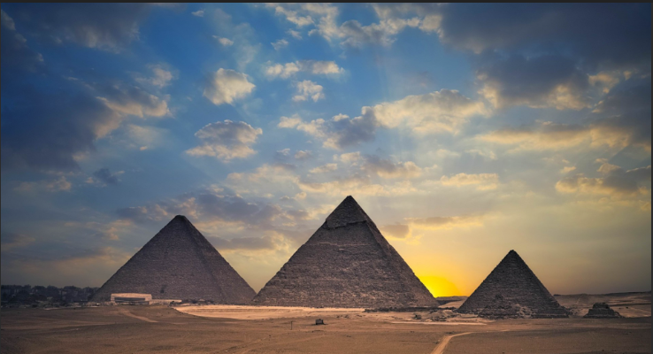
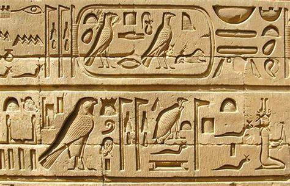
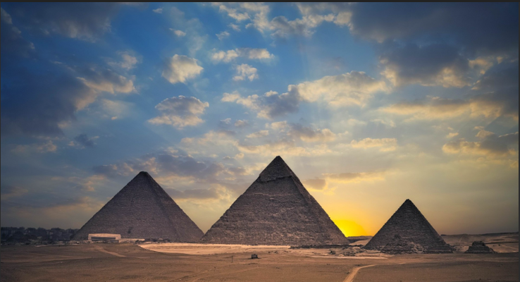
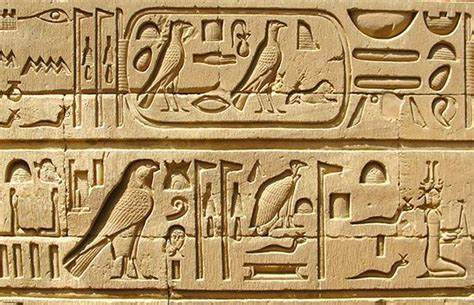
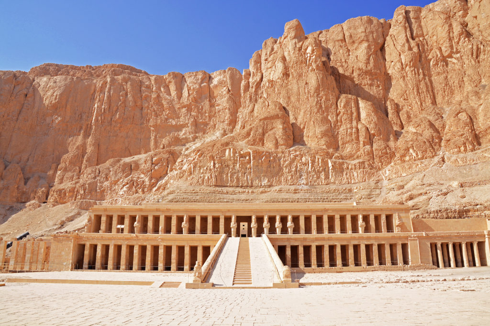
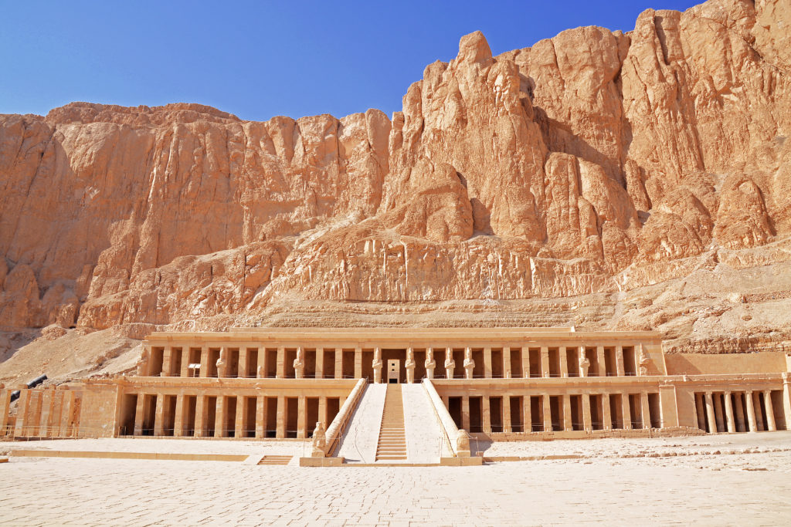
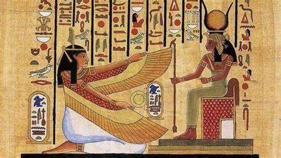
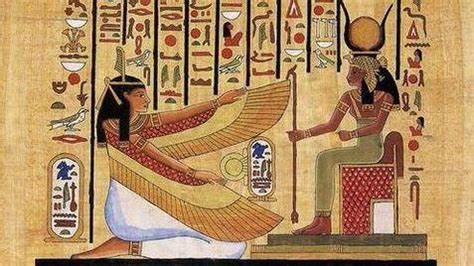

Հին Եգիպտոսի մասին տեղեկության աղբյուրները կարելի է բաժանել երեք հիմնական մասերի
> Տեքստերը գրի են առնված հույն հեղինակների կողմից։ Եգիպտոսի մասին գրած ամենահայտնի հեղինակներից են Հերոդոտոսը , Հեկատեոսը, Դիոդորոս Սիցիլիացին, Ստրաբոնը : Այս աղբյուրները թերի են և պարունակում են բավականին կեղծ տեղեկություններ Եգիպտոսի և նրա մշակույթի մասին։
>Մ.թ.ա. XI դարից սկսած գրվել են Աստվածաշունչը և այլ հրեական կրոնական գրքեր։ Այս աղբյուրներին զգուշությամբ են վերաբերվում, քանի որ դրանք բավականին թերի են, և դրանցում Եգիպտոսի պատմությունը կապել են հրեա ժողովրդի հետ։ Բացի այդ՝ Եգիպտոսի մասին պատմության այս աղբյուրները ակնհայտորեն գնահատվել են միայն հրեաների կողմից։
>Ամենակարևոր աղբյուրներ են հանդիսանում փաստաթղթերը, արձանագրությունները և առարկաները։ Դրանք կարդալ հնարավոր դարձրեց Ժան Ֆրանսուա Շամպոլյոնը, ով կարողացավ վերծանել նաև եգիպտական հիերոգլիֆները։ Հին Եգիպտոսից մեր օրեր են հասել բազմաթիվ պապիրուսներ, որոնք պարունակում են տարբեր բնույթի գրառումներ, շինությունների և հուշարձանների վրա եղած գծապատկերներ, գերեզմանների և այլ շինությունների գծանկարներ, ինչպես նաև կենցաղային իրեր, պաշտամունքի առարկաներ և արվեստի գործեր։ Այս գտածոները մեծ տեղեկատվություն են տալիս եգիպտական կենցաղի, հասարակության, պետական կազմակերպման, կրոնի, բնակչության զբաղվածության, Հին Եգիպտոսի ներքին և արտաքին քաղաքականության մասին։
 



Մումիավորումը Հին Եգիպտոսի մշակույթի մի մասն է։Հին եգիպտացիները ոչ միայն մումիավորում էին մարդկանց նաև կենդանիներին կատուներին, իբիսներին,բազեներին, շներին, օձերին և կոկորդիլոսներին։ Երբեմն դրանք թաղվում էին իրենց տերերի կամ որպես սնունդ մահվանից հետո սպասվող կյանքի համար։ Այնուամենայնիվ առավել հաճախ դրանք զոհաբերում էին, որից հետո մնացորդները հալեցնում էին քահանաները։ Ենթադրվում է, որ այս ձևով ստեղծվել են մոտ 70 միլիոն կենդանիների մումիաներ։ Զմռսում և մումիավորում էին սկզբից միայն փարավոններին։Մումիավորումը շատ բարդ էր և կախված էր մարդու կարգավիճակից։ Մումիավորմոն ընթացքը կատարվել է հստակ մումիականացնող վարպետների շնորհիվ։70 օր քահանաներն ու զմռսագորերը զբաղված էին մահացած մարմնի պահպանողությամբ։ Մահացածներին դնում էին սեղանի վրա 30 սմ բարձրությամբ։ Սկզբից մարմինը լվացվել է արմավենու գինով և Նեղոսի ջրով։ Իսկ հետո բոլոր ներքին օրգանները հեռացվում էին բացի սրտից։ Հետագայում ավելի ուշ մումիավորված օրգանները հետո վերադարձնում էին մարմնի մեջ։ Հետո մարմինը ծածկում էին նատրիումի օքսիդով և 40 օր թողնում էին չորացման։ Դրանիզ հետո մարմինը լվացրել են և քսել են յուղերով և փաթաթել էին սպիտակեղենի շերտերով։Ձեռքերի և ոտքերի մատները փաթաթվում էին առանձին և փաթաթանների միջև դրված էին ամուլետներ։ Ավելի շատ սպիտակեղենի կտորներ կային փաթաթված մարմնի շուրջ բոլորը։Ամեն շերտին քսում էին հեղուկ խեժ,որպեսզի կպցնեին վիրակապերը։ Եվ վերջում մարմինը փաթաթում էին մեծ ծածկույթով, ամրացված սպիտակեղենի գոտիներով և դրվում էին փայտե, կարտոնե կամ քարե դագաղների մեջ, որի մեջ էլ մարմինը թաղում էին։

.jpg) 

 

Մ.թ.ա. 4-րդ հազարամյակում շատ ոչ մեծ տարածքային սուբյեկտներից կազմավորվել են նոմերը, որոնցից էլ առաջացել են երկու քաղաքական միավորումներ՝ Վերին Եգիպտոս և Ստորին Եգիպտոս (մայրաքաղաքները՝ Հիերոկոնոպոլ և Բութո)։ Վերին Եգիպտոսում միասնական պետականության ստեղծումը վերագրվել է նրա կառավարիչ Մինոսին։ Միասնական թագավորության մայրաքաղաքը մինչև մ.թ.ա.3000թ. եղել է Մեմփիսը, որը գտնվել է Նեղոսի դելտայի հարավային մասում։ Մ.թ.ա. 4-րդ հազ. վերջերից մինչև 3-րդ հազ. սկզբներին են վերագրվել առաջին գրավոր հուշարձանները՝ գրված եգիպտական հիերոգլիֆներով։ 30-28-րդ դարերում սկսվել է բախումներ հարևան երկրների՝ հարավում քուշիտների (նուբիացիներ), արևմուտքում՝ լիբիացիների, իսկ հյուսիս արևելքում՝ Սինայի թերակղզու քոչվոր ցեղերի հետ։